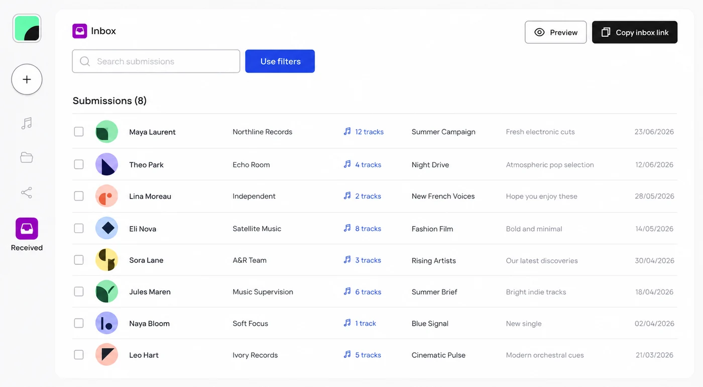

Un fichier audio, une vidéo, une image ou un document compatible : créez un partage sans complexité.
Bridge.audio vs WeTransfer · Alternative pour la musique
Un simple envoi.
Et tout ce qui vient après.
Envoyer une vidéo ou des morceaux peut rester aussi simple qu’un glisser-déposer. Mais avec Bridge, vos destinataires retrouvent un lien qui n’expire pas, peuvent écouter la musique sans téléchargement et continuer à travailler sur les fichiers, même des semaines plus tard. Gratuitement pour commencer.
Bridge est conçu pour les médias et les workflows musicaux, pas pour remplacer tous les transferts génériques très volumineux. Offre Free limitée à 50 titres et 3 membres.


Captures du produit Bridge.audio · Archives produit 2026
EN 30 SECONDES
WeTransfer livre un fichier. Bridge lui donne une suite.
Pour un gros transfert ponctuel, WeTransfer reste excellent. Pour envoyer de la musique, la faire écouter, la recevoir, la retrouver et la partager à nouveau, Bridge réunit ces étapes dans un même Workspace.
Voir la comparaison complète ↓La différence en pratique
Le bon outil dépend de ce qui se passe après l’envoi.
Un transfert ponctuel n’exige pas forcément une plateforme musicale. Mais dès qu’il faut retrouver, actualiser ou présenter un morceau à quelqu’un, le contexte compte.
WeTransferLe transfert ponctuel
Un fichier. Un destinataire. C’est envoyé.
Très pratique pour remettre une archive ou une grosse vidéo, avec prévisualisation des formats pris en charge.
- Transfert générique, sans structure de catalogue à créer
- Prévisualisation audio, vidéo, PDF et images prises en charge
- Demandes de fichiers, espace d’équipe et liens sans expiration sur certaines offres payantes
Bridge.audioLe partage qui dure
Un seul endroit pour envoyer, recevoir et retrouver.
Le même geste de partage, avec un espace musical persistant pour ceux qui envoient et ceux qui reçoivent.
- Liens sans expiration et projets réutilisables, même en Free
- Lecture, métadonnées, visuels et contexte dans un partage professionnel
- Inbox, Workspaces collaboratifs et recherche musicale avancée en Pro
Bridge en pratique
Envoyer. Recevoir. Retrouver.
Trois gestes simples, montrés dans les vraies interfaces de Bridge. Le destinataire peut retrouver la musique et ses informations sans recréer un nouveau transfert.
L’Inbox centralise les soumissions et leur contexte, plutôt que de les éparpiller entre plusieurs liens.
Comparaison approfondie
Bridge.audio vs WeTransfer : le comparatif complet.
Comparez les services actuels, pas les versions d’hier. WeTransfer a progressé sur les previews, la réception et les offres payantes ; Bridge se distingue par la continuité du travail musical.
Critère
WeTransfer
Bridge.audio
Glisser-déposer de médias
Oui : fichiers génériques, archives et vidéos
Oui : fichiers audio, vidéo, images et documents compatibles dans un Workspace
Envoi gratuit
Free : jusqu’à 10 transferts ou 3 Go au total sur 30 jours glissants
Free : jusqu’à 50 titres stockés, 3 membres et projets illimités (capacités différentes)
Liens sans expiration
Free / Starter : jusqu’à 3 jours ; certains forfaits payants permettent de conserver les liens
Liens sans expiration automatique, même en Free ; accès et contenu restent contrôlables
Consulter sans télécharger
Oui : previews des formats pris en charge, y compris audio, vidéo, images et PDF
Oui : lecteur musical et médias présentés dans le contexte d’un projet
Modifier ce que voit le destinataire
Transferts et paramètres disponibles selon le plan
Projets réutilisables et partage actualisable sans refaire une nouvelle livraison
Recevoir des fichiers
Demandes de fichiers disponibles
Smart Inbox dédiée aux réceptions musicales, y compris en Free
Organiser les morceaux reçus
Gestion des transferts et stockage selon le plan
Bibliothèque musicale, projets, Workspaces et métadonnées
Retrouver un morceau
Recherche et organisation de fichiers génériques selon les outils disponibles
Filtres et auto-tagging dès Free ; recherches Standard, Prompt et Similarity en Pro
Collaborer en équipe
Équipes et administration selon abonnement
3 membres en Free, 5 en Talent Pro, 7 en Music Pro
Suivre les interactions
Suivi des transferts et téléchargements selon le plan
Suivi des partages et activités en Pro
Découvrabilité professionnelle
Pas de réseau de découverte musicale comparable documenté
Discovery Hubs optionnels selon plan et éligibilité, au-delà du cercle de partage initial
Sources officielles : limites WeTransfer · expiration · previews · tarifs Bridge · liens Bridge.
En savoir plus : partage et liens durables · Workspaces · IA et recherche musicale · Bridge pour les créateurs.
Les capacités WeTransfer dépendent du forfait. Les capacités Bridge varient également selon Free, Talent Pro, Music Pro et options.
Gratuit vs payant
Deux offres gratuites. Deux logiques différentes.
WeTransfer limite les transferts dans le temps et en volume. Bridge limite la taille de la bibliothèque musicale, mais les liens de partage ne périment pas. La bonne formule dépend de votre usage.
WeTransfer
Pour transférer des fichiers
0 €
Free
Jusqu’à 10 transferts ou 3 Go au total sur 30 jours, avec une disponibilité jusqu’à 3 jours.
Payant
Starter / Ultimate
Des volumes supérieurs et, selon la formule, une expiration configurable et des liens durables.
Les tarifs payants dépendent du pays et de la facturation. Consulter les prix officiels WeTransfer ↗.
Bridge.audio
Pour envoyer et garder le fil
0 €
Free
50 titres, 3 membres, projets illimités, Inbox, auto-tagging de base et liens sans expiration.
Dès 5 €/mois
Talent Pro
250 titres, 5 membres, partage avancé, recherche intelligente et analytics.
Dès 9 €/mois
Music Pro
À partir de 1 000 titres, 7 membres et davantage d’outils professionnels.
Les options d’exposition sur les Discovery Hubs sont distinctes. Voir les prix et capacités Bridge ↗.
Comparaison indicative de produits différents, sans équivalence de volumes, durées de facturation ni de fonctionnalités. Conditions vérifiées le 22 novembre 2026.
Questions fréquentes
Les réponses concrètes avant de choisir.
Peut-on envoyer gratuitement des fichiers sur Bridge comme avec WeTransfer ?
Oui. Bridge permet de déposer et partager des médias compatibles, notamment audio, vidéo, images et documents, depuis un Workspace gratuit. Il ne remplace toutefois pas tous les usages de WeTransfer pour de très gros fichiers ou certaines archives. Bridge Free comprend jusqu’à 50 titres stockés et trois membres, tandis que WeTransfer Free autorise jusqu’à 10 transferts ou 3 Go au total par période de 30 jours.
Les liens Bridge expirent-ils comme les transferts WeTransfer ?
Non : les liens de partage Bridge n’ont pas d’expiration automatique, même sur le plan Free, tant que les contenus restent présents et accessibles. Les transferts WeTransfer Free et Starter sont limités à une disponibilité maximale de trois jours. Certaines formules payantes WeTransfer permettent toutefois des liens sans expiration.
Doit-on télécharger les fichiers pour écouter ou regarder ?
Non, dans les deux services les formats pris en charge peuvent être prévisualisés depuis le navigateur. WeTransfer propose désormais des previews audio et vidéo. Bridge ajoute un lecteur musical intégré à une présentation de projet, avec informations, pochettes, fichiers associés et possibilités de partage durable.
Quelle différence pour la personne qui reçoit ?
Avec WeTransfer, le destinataire reçoit d’abord un transfert dont la disponibilité dépend du forfait. Avec Bridge, il accède à un projet ou à des titres consultables et réutilisables, sans compte obligatoire pour écouter ou télécharger un projet partagé. Le lien reste disponible sans expiration automatique et son propriétaire conserve le contrôle des accès.
Bridge permet-il aussi de recevoir des fichiers ?
Oui. Bridge dispose d’une Smart Inbox dès le plan gratuit pour centraliser les réceptions musicales, puis continuer à les organiser et à travailler dessus. WeTransfer propose aussi des demandes de fichiers, mais n’est pas conçu comme une bibliothèque musicale dotée d’auto-tagging et de recherche spécialisée.
Bridge propose-t-il une recherche musicale par IA ?
Oui. Le plan Free inclut l’auto-tagging de base. Les forfaits Pro ajoutent un auto-tagging avancé et une recherche musicale intelligente, notamment par mots-clés, description en langage naturel et similarité, selon les fonctionnalités disponibles.
Quel outil choisir pour envoyer une grosse archive une seule fois ?
WeTransfer reste généralement le choix le plus simple pour transférer ponctuellement de gros fichiers de types variés. Bridge est particulièrement adapté quand les contenus sont musicaux, doivent rester accessibles, être présentés avec leur contexte et servir à d’autres échanges.
Bridge donne-t-il automatiquement accès à des opportunités professionnelles ?
Non. Bridge possède un écosystème de Discovery Hubs pour la découverte professionnelle, mais l’exposition dépend du plan choisi, des options et de l’éligibilité. Ce n’est pas inclus automatiquement dans la formule gratuite.
Bridge.audio pour les pros et les créateurs
Envoyez simplement. Et gardez votre musique accessible.
Comme un transfert, mais avec une vraie suite pour l’émetteur et le destinataire. Commencez gratuitement avec Bridge.
Sources & methodology
Public information checked 22 November 2026. WeTransfer capabilities depend on the plan; Bridge capabilities vary across Free, Talent Pro, Music Pro and optional add-ons. Prices depend on country and billing period.